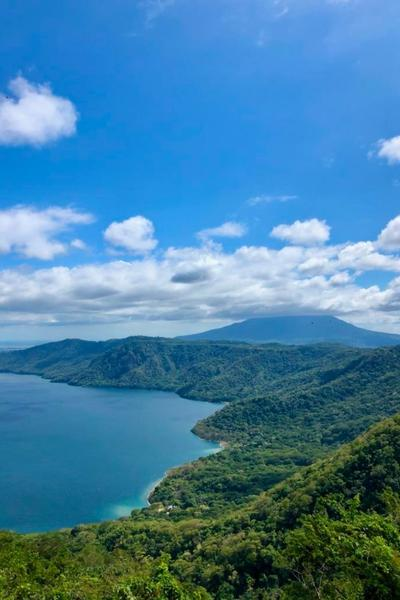
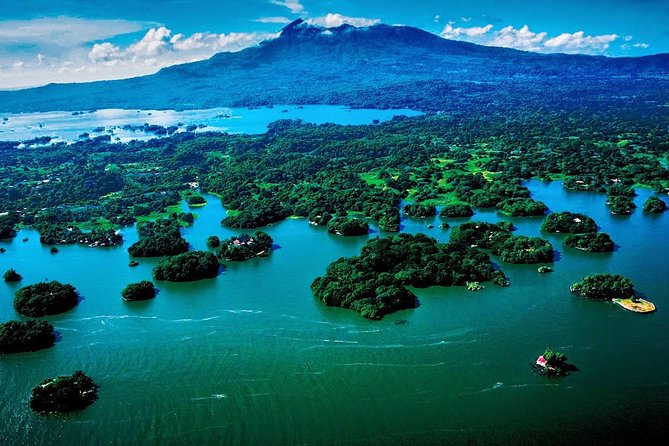

Limpieza de playas
Pequeñas acciones, grandes cambios.
Nuestros bosques, lagunas de cráter, ríos y comunidades son sagrados. El turismo verdadero no extrae, protege, respeta y deja el sendero más limpio de lo que lo encontró.
Cuidando hoy, más mañana
Compromisos del Decálogo
Comienza tu aventura
Suma acciones y desbloquea niveles
Pequeñas acciones, grandes cambios. Asumí estos 10 mandamientos y sé parte de la conservación de Nicaragua.
No uso bolsas ni descartables. Llevo mi botella reutilizable.
No dejo basura. La llevo conmigo hasta un punto de reciclaje.
Camino solo por senderos autorizados.
Sigo indicaciones y cuido la infraestructura.
No contamino ríos, lagunas, playas ni fuentes naturales.
No extraigo plantas, ni molesto a los animales.
Respeto áreas protegidas y zonas de regeneración.
Valoro su cultura, costumbres y modo de vida.
Prefiero servicios locales y experiencias comunitarias.
Comparto buenas prácticas y motivo a otros a cuidar.

Asume los 10 compromisos y recibe tu insignia de Guardián de la Naturaleza.
Ayudanos a proteger los espacios naturales de Nicaragua. Si observás una actividad que afecte el ambiente, podés reportarla de forma confidencial.
Con cada acción sumás puntos y desbloqueás nuevos niveles. Explorá, cuidá y sé parte de una Nicaragua más viva.





Historias reales de viajeros, comunidades y voluntarios que cuidan Nicaragua.
Pequeñas acciones, grandes cambios.

Árboles para el futuro.
Viajar también es cuidar.

Cultura y naturaleza juntas.

Protejamos su hogar.
Así cuidamos que cada dato de naturaleza que ves en BAQUEANO sea confiable.
Ningún contenido ambiental podrá marcarse como verificado o publicarse con check BAQUEANO si no existe evidencia trazable de la fuente oficial o validación documentada correspondiente.
Un área protegida puede estar publicada informativamente sin navegación; el botón “Cómo llegar” solo se habilita cuando existe un punto de acceso validado. El centro geográfico de una reserva no se utilizará automáticamente como entrada turística.
Así evitamos enviarte a una coordenada correcta en el mapa, pero incorrecta como entrada.
Tu seguridad también es parte del cuidado
Sumate a la red BAQUEANO y promové un turismo responsable.
Juntos por una Nicaragua más limpia y sostenible.